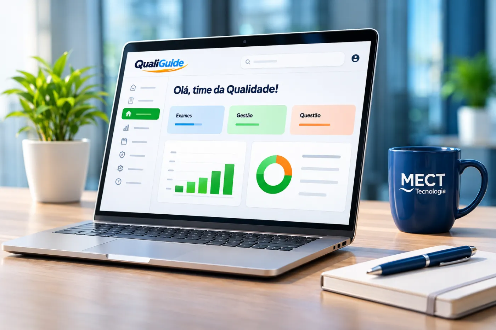
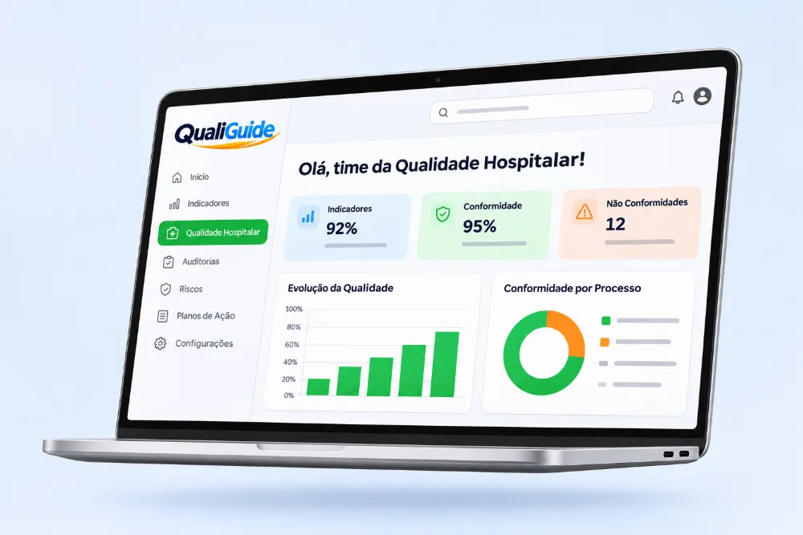
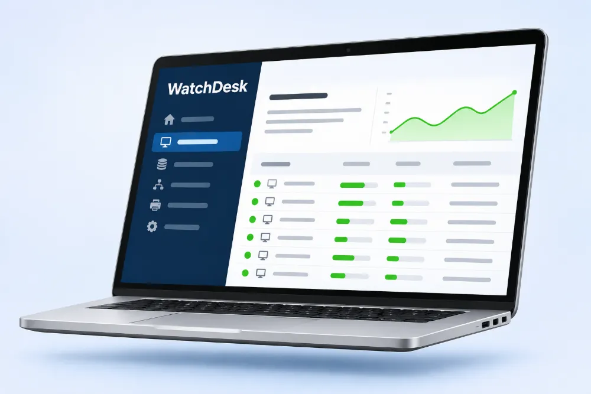

Web design
Sites modernos, rápidos e focados em resultados.
- Sites institucionais
- Páginas de produto
- Hotsites e campanhas
Desenvolvimento, consultoria e softwares que organizam processos, integram equipes e geram mais eficiência para o seu negócio.

Soluções de tecnologia para as necessidades do seu negócio.
Sites modernos, rápidos e focados em resultados.
Estratégia, infraestrutura e tecnologia para mais eficiência.
Sistemas criados a partir do fluxo real da sua empresa.
Softwares próprios que levam mais controle, qualidade e produtividade para o seu dia a dia.
Gestão da qualidade para instituições de saúde.

Monitoramento de estações, acesso remoto e produtividade.

Soluções alinhadas aos seus processos e objetivos.
Uma equipe parceira, do planejamento à entrega.
Integração entre pessoas, processos e tecnologia.
10+ anos de atuação em soluções para saúde
600+ usuários atendidos pelos nossos sistemas
2 produtos próprios: QualiGuide e WatchDesk
Conte o seu desafio e descubra como a tecnologia pode impulsionar o seu negócio.
Fale com a gente